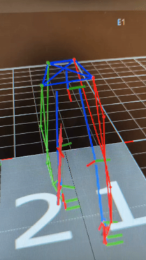

Gait Phase Estimation using Deep Neural Networks
In the realm of biomechanics research, understanding gait phases is crucial for diagnosing and addressing gait disorders. Our project is centered on the fascinating field of gait phase estimation, where we leverage the capabilities of neural network models to contribute to this vital area of study. Neural networks have demonstrated their effectiveness in recognizing complex patterns within the gait cycle and accurately categorizing its various phases. Our project focuses on the application of neural network models to tackle this challenging task. I began with the collection of lower limb kinematic data from human subjects, utilizing state-of-the-art Vicon motion capture systems and Bertec Treadmill forceplates. We explored different combinations of kinematic data as inputs for our neural network models, carefully evaluating their performance. The images here demonstrate how the skeleton models are obstained from vicon motion capture systems.
We also sought to understand the strengths and limitations of various neural network architectures in gait phase estimation, including feed-forward neural networks, LSTMs, CNN-LSTMs, and variational autoencoders (VAEs). A notable achievement was the development of a Hybrid-VAE model, which we trained on data from 10 subjects walking on both level and inclined surfaces at varying speeds. Our model exhibited strong performance, achieving a remarkable gait phase estimation accuracy of 99.7% for the same subject, maintaining a 5% error tolerance during level walking trials. It also performed well on inclined surfaces, with an accuracy rate of 99.6%. Expanding our scope, we tested our model on a broader group of 11 healthy subjects navigating mixed-level and inclined surfaces. The results remained promising, with our model achieving an accuracy of 98.2% with a 5% gait phase percentage error tolerance and 90.1% with a 3% gait phase percentage error tolerance. Our project underscores the potential of neural networks to enhance gait phase estimation in a meaningful way. It represents a valuable contribution to the field, with the aim of improving the diagnosis and management of gait-related conditions.
View on GitHub